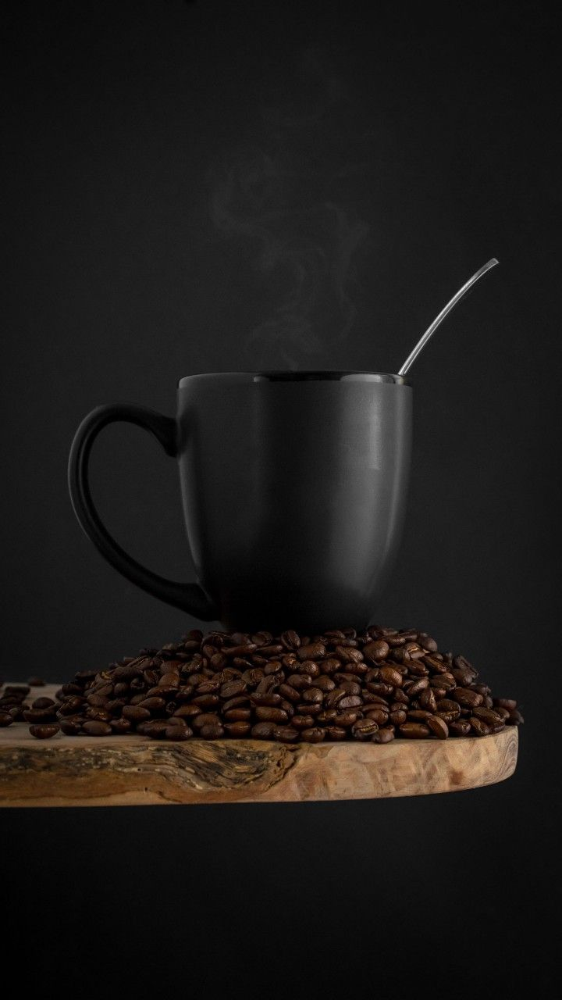

"As someone who values a peaceful and comfortable environment to work, Coffee~~ checks all the boxes. It's my go-to spot for productive afternoons. The coffee selection is amazing, and the staff is always accommodating. Highly recommended!"
Alex T.

The taste that remains forever
Where coffee dreams come to life.
Welcome to Coffee~~, the ultimate destination for coffee lovers seeking a unique and unforgettable experience. Nestled in the heart of SPB, our cafe exudes a warm and inviting atmosphere, perfect for catching up with friends, browsing the web, or simply enjoying a quiet moment alone. We pride ourselves on serving the highest quality coffee, sourced from renowned local and international roasters who share our commitment to excellence.